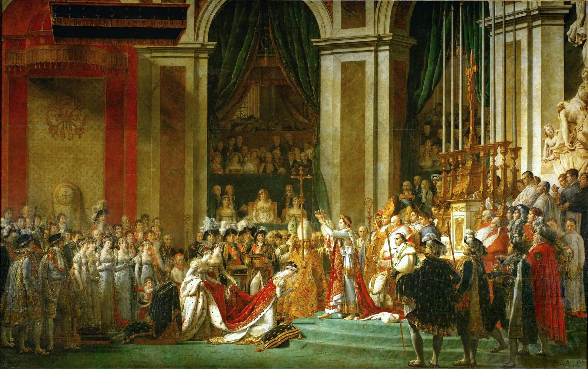
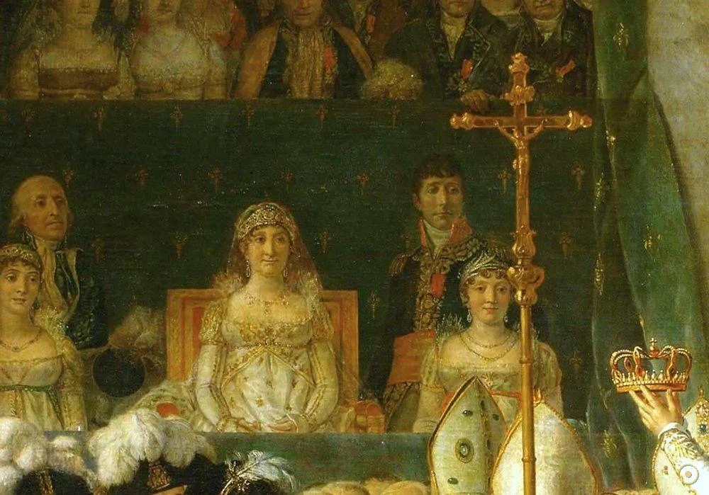
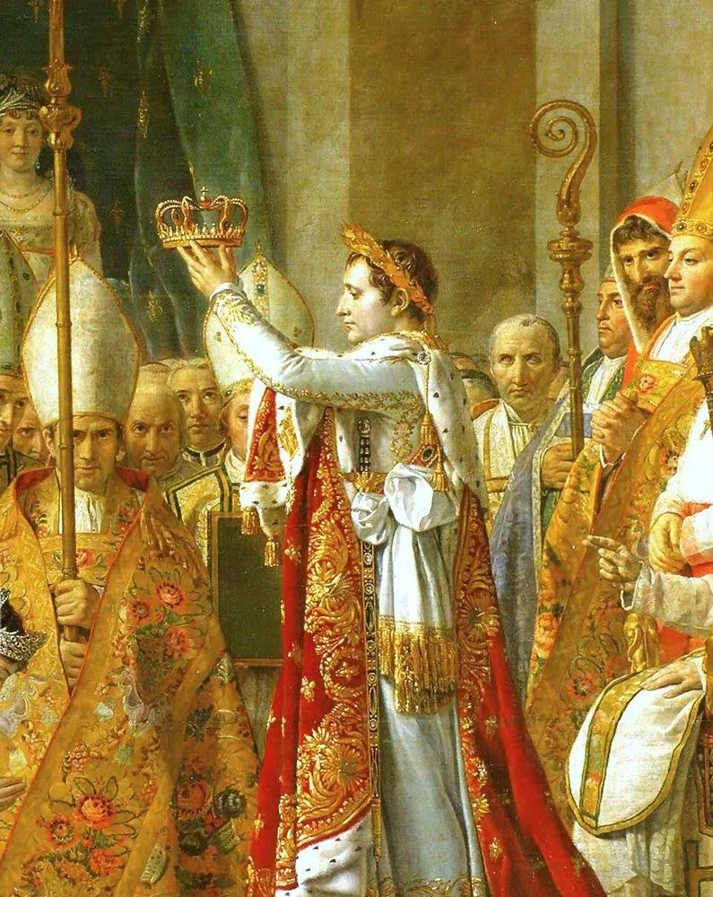
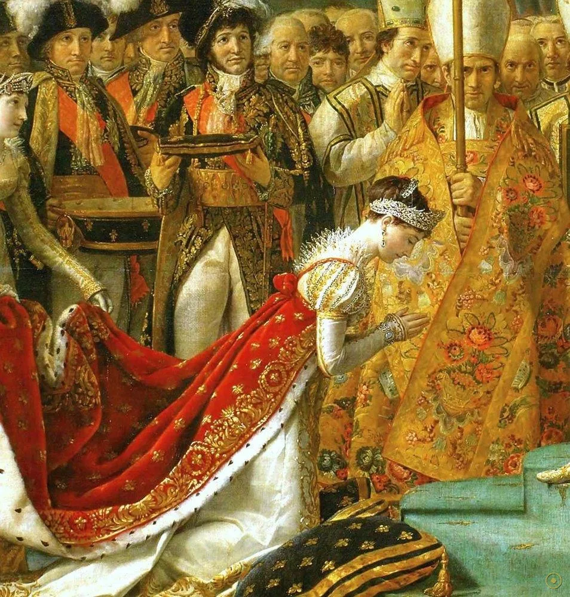
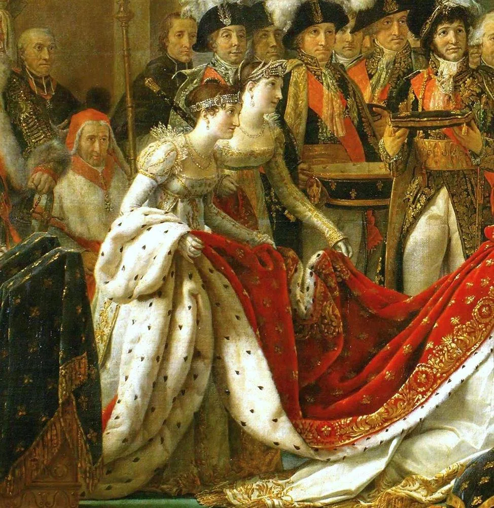
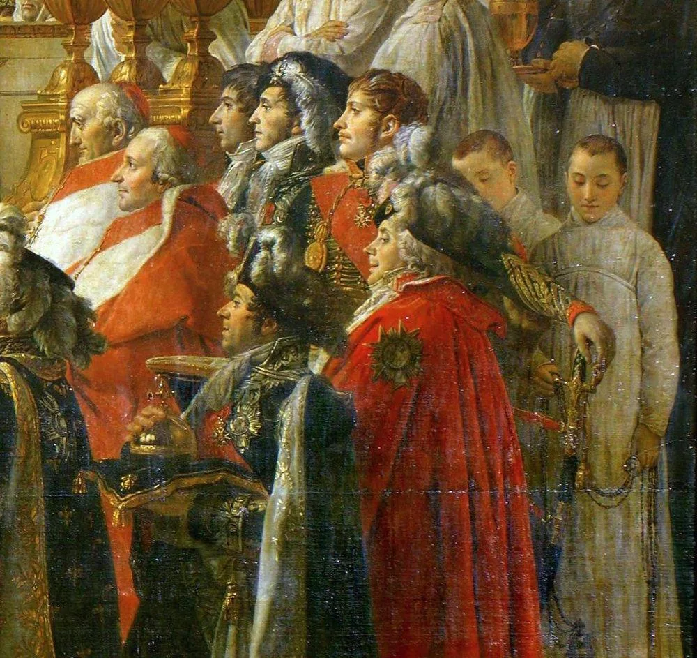
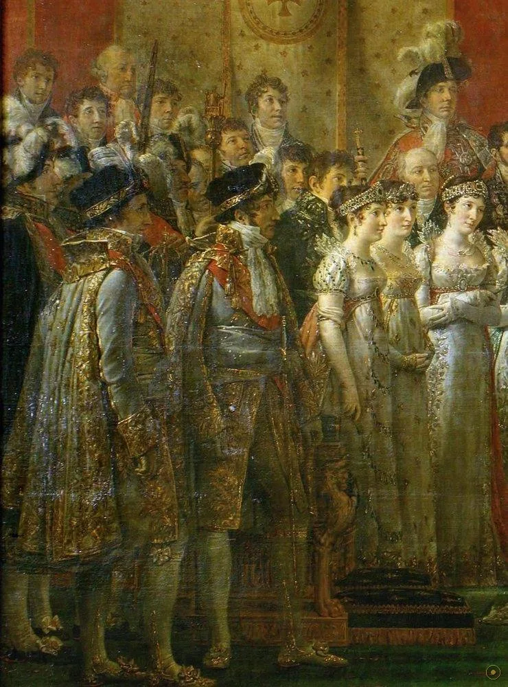

1804 年 12 月 2 日，巴黎圣母院。按惯例，皇帝应由教宗加冕。但拿破仑从教宗庇护七世手中拿过皇冠，转身，自己戴在了头上——随后走向跪候的约瑟芬，为她戴上后冠。大卫受命记录这一时刻，却把画笔停在了下一个瞬间。
按惯例，皇帝应当由教宗亲手加冕。
但他拿起皇冠，转身，自己戴上——礼让让位于意志，一场加冕礼变成了一次宣言。
大卫最初的素描画的正是这个动作；后来，他把它改成了那个更「体面」的瞬间。
—— 据史料与画室素描的通行叙述
大卫画下的，是「自己戴冠」与「为她加冕」之间的那个选择。
画面上一百五十余人，大多有原型可查。但大卫不是摄影师——为了帝国的体面，他悄悄改动了不少于三处细节。

点击画面中的 ✦ 光点 查看画面细节 · 图片来源：Wikimedia Commons（公有领域）
从加冕礼结束到沙龙公开展出，这幅近 10 米宽的巨作画了将近三年——它是法兰西第一帝国最重要的形象工程。
1804.12.2 · 巴黎圣母院
加冕礼举行，大卫以「皇帝第一画家」身份到场记录。典礼结束后，他把布景、服装与道具一一搬进画室，并画下大量习作。
➤1805–1807 · 画室
巨幅画布上要安置一百五十多个真实人物。拿破仑多次到画室探班，亲自对细节下达「修改意见」——包括那位必须出现的母亲。
➤1808 · 沙龙展出
画作公开展出即轰动一时。帝国倾覆后大卫流亡布鲁塞尔，又凭记忆重绘了一幅副本，今藏凡尔赛宫——两版细节略有差异。

修改一 · 加冕动作。存世素描显示，大卫最初的方案是拿破仑自己戴冠；成稿改为为皇后加冕——主导者依旧是他，但姿态更「体面」。
修改二 · 没到场的母亲。莱蒂齐亚因反对这桩婚事留在罗马，拿破仑却要求把她画在观礼包厢的正中央，比任何家族成员都显眼。
修改三 · 人人年轻挺拔。跪着的约瑟芬、端坐的主教、站立的权贵——大卫按帝国宣传的需要调校了每个人的形象：画布本身就是宣传片。
※ 「自戴冠」方案见于留存的素描与同代人记述，其修改动机学界仍有讨论；母亲未到场而入画，则是史料确凿的一处。
在这幅画里，站位就是权力结构。每个人出现在哪里、面朝哪里，都经过了精心计算。

举冠的动作被定格在画面的几何中心，居高临下。

41 岁的约瑟芬被画得年轻优雅，成为画面最亮的一点。
万里而来的教宗只得到一个祝福的手势位置。
未出席加冕的莱蒂齐亚被画在观礼包厢正中央。

红丝绒裙裾如一条丝带，把视线引向仪式中心。

红袍主教与权贵错落排布，站位即秩序。
权杖与仪仗一丝不苟，像一份可以查阅的清单。

上百张真实面孔入画，一场帝国阵容的集体肖像。
18 世纪末的法国画坛以古希腊罗马为最高范本：清晰的轮廓、雕塑般的造型、庄严对称的构图。大卫正是这一风格的旗手。
大卫曾为法国大革命作画（《马拉之死》），甚至投票赞成处死国王；十余年后，他又成为皇帝的首席画师——艺术始终贴着政治的脉搏。
从跨越阿尔卑斯山的骑马像到加冕大典，拿破仑深知图像的力量。大卫与其说在记录历史，不如说在导演历史。
流亡布鲁塞尔后，大卫凭记忆重绘了一幅副本，现藏凡尔赛宫。两版在人物与细节上的出入，成为研究他「历史剪辑」的绝佳对照。
沙龙展出即轰动，拿破仑亲赴画室致谢。这幅画成为第一帝国最著名的官方图像。
帝国倾覆，大卫流亡布鲁塞尔，在异乡凭记忆重绘出几乎一模一样的加冕大典——今藏凡尔赛宫。
原作陈列于卢浮宫。近 10 米宽的画面依然是整座展厅的绝对主角：一个帝国的兴衰，悬在一面墙上。